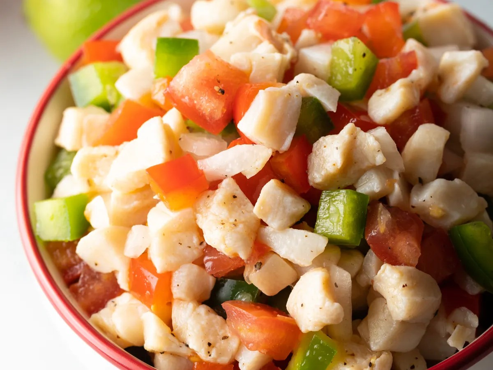

Conch salad is one of the most popular Bahamian dishes that is both a flavorful comfort food and a colorful, edible work of art. The key ingredient in the dish is conch, a shellfish that is unfortunately slowly dying out due to its rapid depletion in the Caribbean seas.
Meal prep time : 15 minutes
Servings : 10